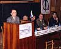
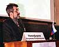
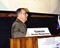

17 января 2003 г. в Смоленске на базе Смоленской государственной Медицинской академии состоялась Межобластная конференция врачей-инфекционистов Центрального федерального округа.
17 января 2003 г. в Смоленске на базе Смоленской государственной Медицинской академии состоялась Межобластная конференция врачей-инфекционистов Центрального федерального округа. Конференция была организована под эгидой Министерства здравоохранения РФ, Центрального федерального округа, Департамента по здравоохранению Администрации Смоленской области, Смоленской государственной медицинской академией, при участии Межрегиональной ассоциации по клинической микробиологии и антимикробной химиотерапии (МАКМАХ), НИИ антимикробной химиотерапии и кафедры инфекционных болезней СГМА.
В конференции приняли участие более 150 человек из 14 регионов Центрального федерального округа РФ, а также районов Смоленской области. Среди участников конференции врачи-инфекционисты составили 34,3%, эпидемиологи 8,6%, сотрудники кафедр, интерны и ординаторы 22,1%, врачи прочих специальностей 10,7%.
Научная программа Конференции началась с освещения актуальных вопросов инфекционной патологии в России. С докладом по этой теме выступил главный инфекционист Минздрава РФ, академик РАМН, профессор В.В. Малеев.
Программа конференции включала 8 докладов, которые были посвящены состоянию инфекционной заболеваемости в России и Смоленской области, качеству диагностической и лечебной работы в ЛПУ, проблеме ВИЧ-инфекции и рациональным методам ее терапии, современным возможностям терапии вирусных гепатитов. Были рассмотрены вопросы, касающиеся клинического значения устойчивости микроорганизмов, а также возможностей терапии инфекций, вызванных резистентными возбудителями.
В рамках конференции состоялось совещание главных инфекционистов ЦФО, проведенное Главным инфекционистом Минздрава РФ, академиком РАМН В.В. Малеевым.
Спонсорами конференции выступили фармацевтические компании bioMerieux, Boeringer Ingelheim, F. Hoffman La-Roche Ltd., GSK, KRKA, Lek и ООО Медикофарма. Перед началом конференции и в перерыве между докладами на стендах фармацевтических компаний участники могли получить информацию о современных препаратах, применяемых в терапии инфекционной патологии
Участники конференции оценили высокий уровень организации и качество представленных лекций. Несомненно, прошедшая встреча будет иметь большое значение для улучшения научных и деловых связей между специалистами областей Центрального региона России, совершенствования взаимодействия между инфекционными службами регионов.
Фотографии с конференции
(выберите нужную для просмотра увеличенного изображения):
|  | Заместитель директора ЦНИИ эпидемиологии МЗ РФ В.В. Малеев |
| Президиум |
|  | Главный инфекционист Центрального федерального округа, профессор В.В. Никифоров |
|  | Зав. кафедрой инфекционных болезней СГМА, профессор М.М. Храмцов |
| Участники совещания главных инфекционистов ЦФО |